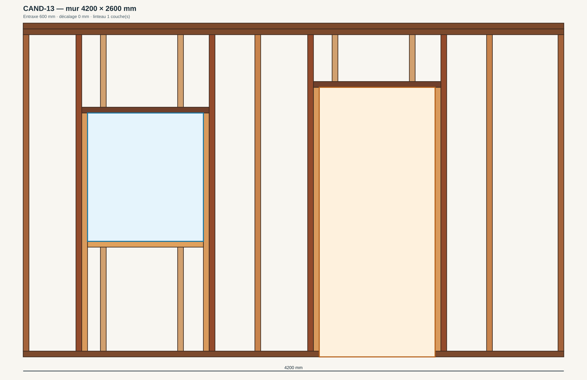
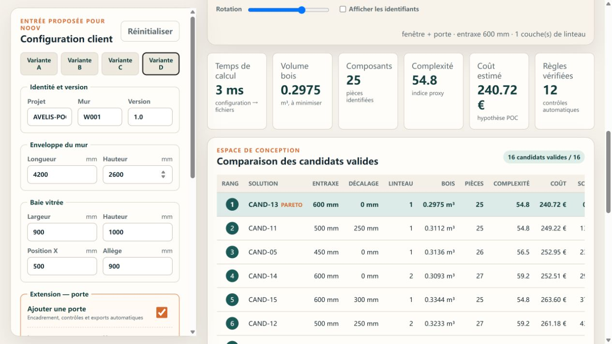

Conception paramétrique et optimisation multicritère de murs 2D à ossature bois — du besoin client aux fichiers de fabrication, sans ressaisie.
Rapport scientifique du prototype fonctionnel v1.1
Le prototype transforme une configuration de mur en 16 alternatives vérifiées, recommande une solution et remet un paquet cohérent de fabrication, de qualité et d'interfaces.
Le passage du configurateur commercial au bureau d'études, puis à la fabrication et à la logistique, crée un risque de ressaisie et de divergence. Le Bloc 1 doit démontrer une chaîne numérique où les paramètres, la géométrie, la nomenclature et les fichiers de remise proviennent d'une source de vérité commune.
Avelis Wall Flow est une application hors ligne, sans dépendance, qui génère un modèle sémantique de mur à ossature bois avec une fenêtre et une porte optionnelle. Les ouvertures partagent le même modèle, le même générateur et les mêmes exports. L'application explore quatre entraxes, deux origines de trame et deux variantes de linteau, contrôle les règles POC, calcule matière/complexité/coût et classe les candidats. Les quatre cas de référence produisent chacun 16 solutions valides et leurs fichiers DXF, STL, SVG, CSV, JSON et ZIP.
| 1. Exigences et question de recherche | 3 | 7. Résultats expérimentaux | 9 |
| 2. État de l'art et choix | 4 | 8. Fabrication et interfaces | 10 |
| 3. Méthode et architecture | 5 | 9. Prototype, valeur et risques | 11 |
| 4. Modèle et règles | 6 | 10. Conclusion et références | 12 |
| 5. Optimisation multicritère | 7 | ||
| 6. Prototype logiciel | 8 |
Le cahier général fixe la continuité de la chaîne besoin → conception → fabrication → logistique, les interfaces avec Noov et les autres blocs, la traçabilité, les preuves et une restitution commune. La fiche Bloc 1 focalise le travail sur la conception paramétrique, la fabricabilité, l'optimisation et la génération de fichiers. Les attentes de restitution comprennent un prototype fonctionnel, un rapport scientifique de 10 à 15 pages, une vidéo de 2 à 3 minutes, une présentation plénière et un prototype FabLab. Le support général mentionne aussi une composante de plan d'affaires ; elle est traitée dans la documentation et page 11.
Comment générer plusieurs ossatures bois fabricables à partir d'un petit nombre de paramètres client, les comparer sans masquer les hypothèses, puis transmettre une solution traçable aux acteurs aval ?
| Indicateur | Définition | Preuve |
|---|---|---|
| Temps configuration → fichiers | calcul puis manipulation jusqu'au ZIP | chronométrage et journal |
| Variantes valides | candidats sans erreur POC | compteur de l'interface |
| Taux d'automatisation | sorties sans ressaisie / sorties | audit du paquet |
| Écart dimensionnel | FabLab – CAO à l'échelle | fiche de mesure |
| Couverture des règles | contrôles implémentés et déclarés | rapport qualité |
Une recherche ciblée a comparé des projets GitHub de conception bois, BIM léger, géométrie paramétrique et fabrication. L'objectif n'était pas de coller des extraits, mais d'identifier les frontières de responsabilités qui rendent un outil maintenable.
| Projet | Apport | Décision |
|---|---|---|
| Timberframe Studio | pièces individuelles, ouvertures, BOM/coût | reprendre le principe sémantique ; pas le code |
| Lite BIM Simulator | modules matériaux, règles, géométrie, ossature et vue 3D | reprendre la séparation ; pas de copie sans licence claire |
| build123-timber | éléments paramétriques, assemblages, formats neutres | conserver l'idée d'export dérivé |
| COMPAS Timber | paramètres/intention comme source de vérité ; modèle de fabrication dérivé | principe architectural central |
Aucun dépôt étudié ne réalise directement l'intégralité du flux demandé avec Noov, génération de variantes, règles POC, décision multicritère, interfaces inter-blocs, STL de prototype et preuve expérimentale. Une adaptation importante serait nécessaire dans tous les cas. Le choix rationnel est donc un noyau original et compact, inspiré de ces architectures mais sans dépendance externe.
Les liens, licences observées et précautions de provenance sont consignés dans THIRD_PARTY_NOTICES.md et docs/REFERENCES.md.
Le dépôt adopte une structure de projet open source : apps/web contient uniquement l'interface ; packages/core est le moteur métier ; config et schemas portent les règles et contrats ; experiments, tests, docs et deliverables séparent preuves, vérification et restitution. Aucun fichier unique ne concentre l'application.
| Couche | Responsabilité | Sortie |
|---|---|---|
| Domaine | normaliser l'entrée, identité et profil | projet versionné |
| Génération | créer les composants par configuration | modèle sémantique |
| Règles | détecter erreurs et points de revue | rapport de validation |
| Optimisation | calculer KPI, Pareto et score | liste classée |
| Export | sérialiser le candidat sélectionné | DXF, STL, SVG, CSV, JSON, ZIP |
| Web | interaction, vue et téléchargement | prototype utilisable |
L'application se lance par double-clic, sans serveur et sans réseau. Elle n'utilise ni bibliothèque externe, ni CDN, ni compilation. Les modules JavaScript sont partagés entre navigateur et tests Node. Le ZIP est créé localement : aucune donnée projet n'est téléversée. Cette sobriété facilite la démonstration et la reproductibilité.
Un identifiant de pièce combine projet, mur, version et séquence. Le même code apparaît dans le modèle, la BOM, le CSV machine et les interfaces. Le profil de règles et la version du logiciel accompagnent la remise ; une évolution peut donc être auditée sans confondre deux géométries.

L'utilisateur décrit l'enveloppe du mur, une fenêtre et, via un interrupteur, une porte optionnelle. Le domaine transforme ces entrées en un tableau unique openings[]. Le générateur applique ensuite la même fonction d'encadrement à chaque ouverture : montants maîtres, montants d'appui et linteau. La fenêtre reçoit une traverse et des montants d'allège ; la porte part du sol et interrompt la lisse basse. Chaque pièce conserve aussi l'identifiant de l'ouverture qui l'a produite.
Le profil POC-FR-TIMBER-2026-01 utilise une section 45 × 145 mm, un matériau C24 de démonstration, une tolérance ±1 mm et une longueur maximale de 6 m. Ces hypothèses sont centralisées et versionnées. Elles servent à prouver le mécanisme, mais doivent être remplacées par le catalogue et les règles validés d'Avelis.
Pour la même demande client, le programme combine 4 entraxes (400, 450, 500, 600 mm), 2 origines de trame (0 et demi-entraxe) et 2 nombres de couches de linteau. L'espace contient donc 4 × 2 × 2 = 16 candidats. La génération exhaustive est ici préférable à un algorithme opaque : l'espace est petit, la couverture est complète et la démonstration reste explicable.
| Objectif à minimiser | Calcul POC | Sens |
|---|---|---|
| Matière | somme longueur × section | volume de bois |
| Complexité | pièces + 0,35 coupes + 0,8 longueurs uniques + 0,5 pièces spéciales | proxy de diversité et manutention |
| Coût | matière + coupes + assemblage | comparaison interne, pas devis |
Pour chaque objectif j, la valeur est normalisée entre le minimum et le maximum observés : nᵢⱼ = (xᵢⱼ − minⱼ)/(maxⱼ − minⱼ). Le score à minimiser vaut 100 × Σ wⱼ nᵢⱼ. Les poids changent selon la priorité : équilibrée (45 % matière, 35 % complexité, 20 % coût), matière, fabrication ou coût. L'interface expose le score et toutes les métriques afin d'éviter une recommandation « boîte noire ».
Une solution est marquée Pareto si aucune autre n'est au moins aussi bonne sur les trois objectifs et strictement meilleure sur l'un d'eux. Le rang pondéré exprime la préférence courante ; le front Pareto montre le compromis intrinsèque. La solution recommandée n'est donc pas décrite comme universellement optimale, mais comme la meilleure au regard des hypothèses et poids sélectionnés.

La colonne gauche limite la saisie aux paramètres nécessaires. Quatre boutons chargent les cas de référence ; le quatrième active la porte et ses trois paramètres. Après validation, la zone principale affiche la solution recommandée, une vue manipulable, les KPI et la table des candidats. Un clic sur une ligne remplace la solution sélectionnée sans relancer le calcul. Les boutons JSON, STL, BOM et ZIP produisent les fichiers depuis l'état courant.
La vue n'est pas une simple illustration indépendante : elle dessine les mêmes composants utilisés pour la BOM et les exports. Les couleurs distinguent les rôles constructifs et l'affichage optionnel des identifiants facilite la démonstration de traçabilité.
Le script d'expérience charge chaque préréglage, exécute le flux complet, exige au moins une solution valide, sélectionne le rang 1 et écrit le paquet dans un dossier dédié. Un manifeste, un JSON de résultat et un CSV synthétique permettent l'audit. Dix tests vérifient les quatre cas, le modèle fenêtre/porte partagé, la complétude du cadre, les conflits entre ouvertures, l'unicité des identifiants, le classement, la BOM et les signatures des exports.
| Cas | Mur / ouvertures (mm) | Valides | Recommandé | Bois m³ | Pièces | Coût POC € |
|---|---|---|---|---|---|---|
| A standard | 3000×2400 / F 900×1000 | 16 | CAND-09 | 0,19161 | 15 | 152,55 |
| B large | 4200×2600 / F 1200×1100 | 16 | CAND-13 | 0,26863 | 19 | 209,30 |
| C compact | 2400×2400 / F 700×900 | 16 | CAND-01 | 0,17725 | 15 | 143,65 |
| D fenêtre + porte | 4200×2600 / F 900×1000 + P 900×2100 | 16 | CAND-13 | 0,29754 | 25 | 240,72 |
Les quatre géométries traversent sans ressaisie les mêmes modules et génèrent toutes les sorties. Le cas D prouve que l'extension porte n'est pas une chaîne parallèle : ses 25 pièces apparaissent dans le même modèle, la même BOM et les mêmes formats que le cas A. Le classement choisit des décalages de trame différents selon la largeur : la recommandation n'est pas codée en dur.
Les exécutions de référence restent inférieures à 25 ms sur la machine de développement. Cette valeur mesure le calcul, pas la manipulation humaine. Pour une preuve défendable, le protocole de soutenance prévoit cinq répétitions du temps entre validation de la saisie et téléchargement du ZIP, avec navigateur et machine consignés.
L'écart dimensionnel du prototype doit être rempli après impression réelle. La fiche conserve volontairement les cases vides : aucune mesure physique n'a été inventée.
| Dossier | Contenu | Destinataire |
|---|---|---|
| 01_entree | demande Noov proposée | configuration / audit |
| 02_conception | JSON, SVG, DXF, STL | BE et FabLab |
| 03_fabrication | BOM, membres machine, remise production | Bloc 2 / atelier |
| 04_qualite | validation et comparaison des candidats | qualité / décision |
| 05_interfaces | réponse Noov et remise logistique | Noov / Bloc 3 |
Le SVG documente l'élévation et peut servir de gabarit. Le DXF utilise des faces 3D neutres lisibles par de nombreux outils CAO. Le STL représente les volumes à l'échelle choisie. Le CSV machine fournit une ligne par pièce et ses opérations ; il reste volontairement neutre en attendant le post-processeur de la machine réelle. Les JSON transportent identité, version, profil de règles, statut et KPI.
Trois schémas JSON décrivent la demande Noov, la remise Bloc 1 → Bloc 2 et la remise Bloc 1 → Bloc 3. Ils constituent des propositions à valider en atelier d'interface. La responsabilité du Bloc 1 s'arrête à une solution conceptuellement valide ; la production ne doit passer à APPROVED_FOR_PRODUCTION qu'après revue structurelle et machine.
La version du schéma identifie le contrat ; la version du logiciel identifie le calcul ; la version du mur identifie la révision métier ; le profil identifie les règles. Une plateforme industrielle doit archiver les anciens paquets, interdire l'écrasement silencieux et enregistrer l'approbateur.
Le cas A à l'échelle 1:15 mesure environ 200 × 160 × 9,7 mm et tient sur un plateau courant. Le protocole recommande PLA, couche 0,20 mm et impression à plat. Cinq dimensions sont à contrôler au pied à coulisse : longueur, hauteur, baie en largeur/hauteur et épaisseur. Les photographies, la machine, le trancheur, le temps et les écarts doivent rejoindre la remise.
La valeur annuelle ne doit pas être inventée. Un pilote doit mesurer le temps de bureau d'études par dossier, les erreurs de ressaisie, le délai de devis et la matière. La formule de décision est : volume annuel × gain unitaire × coût de référence, plus erreurs et matière évitées, moins exploitation.
| Risque | Réponse |
|---|---|
| résultat interprété comme certifié | statuts, avertissements et approbation obligatoire |
| règle obsolète | profil versionné, tests et propriétaire métier |
| dépendance à une machine | format neutre + post-processeur séparé |
| faible adoption | parcours court et preuve sur dossiers réels |
Avelis Wall Flow répond au cœur du Bloc 1 par une preuve exécutable : une demande paramétrique devient plusieurs ossatures, les incohérences sont bloquées, les compromis sont quantifiés et une solution sélectionnée alimente sans ressaisie tous les fichiers de remise. Le dépôt est structuré, documenté, testé et fonctionne hors ligne. Quatre géométries différentes, dont une avec fenêtre et porte, produisent chacune 16 alternatives et un paquet complet.
La contribution principale n'est pas une forme spectaculaire, mais la cohérence du fil numérique. Le même composant garde son rôle, sa géométrie et son identifiant entre la vue, la BOM, la fabrication et les interfaces. Les hypothèses sont versionnées ; les contrôles absents sont déclarés. Cette transparence prépare une discussion industrielle plus utile qu'une simulation de certification.
La première extension doit être une séance de validation avec Avelis et les Blocs 2/3 : formats Noov, catalogue de sections, règles constructives, capacités machine et statuts d'approbation. Ensuite viennent un moteur structurel qualifié, la bibliothèque d'assemblages, l'optimisation combinatoire de débit et les post-processeurs IFC/BTLx ou machine. Le prototype physique doit être imprimé et mesuré par l'équipe.
Une assistance IA a contribué à l'analyse, à la structuration, au code et aux brouillons. L'équipe garde la responsabilité de la vérification et de la soutenance. Le journal détaillé se trouve dans docs/AI_USAGE_LOG.md. Le dépôt contient la source du rapport, les scripts, les expériences, le manifeste et les tests pour permettre la reproduction.